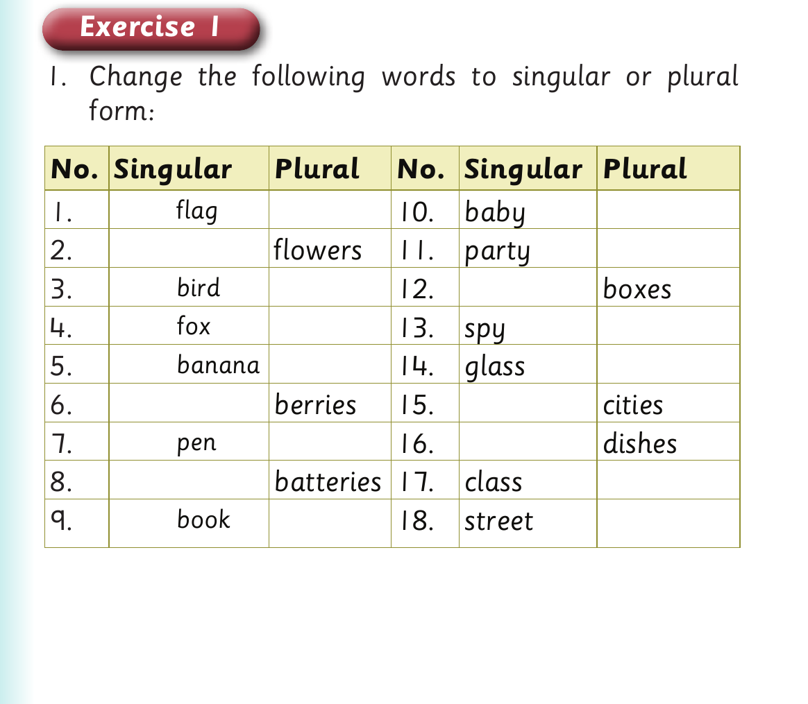

Singular and plural forms - dialogue and Exercise 1
Ann : What other fruits do you like?
For Singular and plural forms - dialogue and Exercise 1, panel 1 of 4 presents the source activity with these printed labels and instructions: Ali : I also like bananas.
Ali : I also like bananas.
Ann : What about you?
For Singular and plural forms - dialogue and Exercise 1, panel 2 of 4 presents the source activity with these printed labels and instructions: Ali : I like oranges and papayas.
Ali : I like oranges and papayas.
Ann : How does a papaya taste?
For Singular and plural forms - dialogue and Exercise 1, panel 3 of 4 presents the source activity with these printed labels and instructions: Ali : It tastes sweet.
Ali : It tastes sweet.
Exercise 1
1. Change the following words to singular or plural form.

For Singular and plural forms - dialogue and Exercise 1, panel 4 of 4 presents the source activity with these printed labels and instructions: Exercise 1 1. Change the following words to singular or plural form: No. Singular Plural No. Singular Plural 1. flag 10. baby 2. flowers 11. party 3. bird 12. boxes 4. fox 13. spy 5. banana 14. glass 6. berries 15. cities 7. pen 16. dishes 8. batteries 17. class 9. book 18. street
Exercise 1
1. Change the following words to singular or plural
form:
No. Singular Plural No. Singular Plural
1. flag 10. baby
2. flowers 11. party
3. bird 12. boxes
4. fox 13. spy
5. banana 14. glass
6. berries 15. cities
7. pen 16. dishes
8. batteries 17. class
9. book 18. street